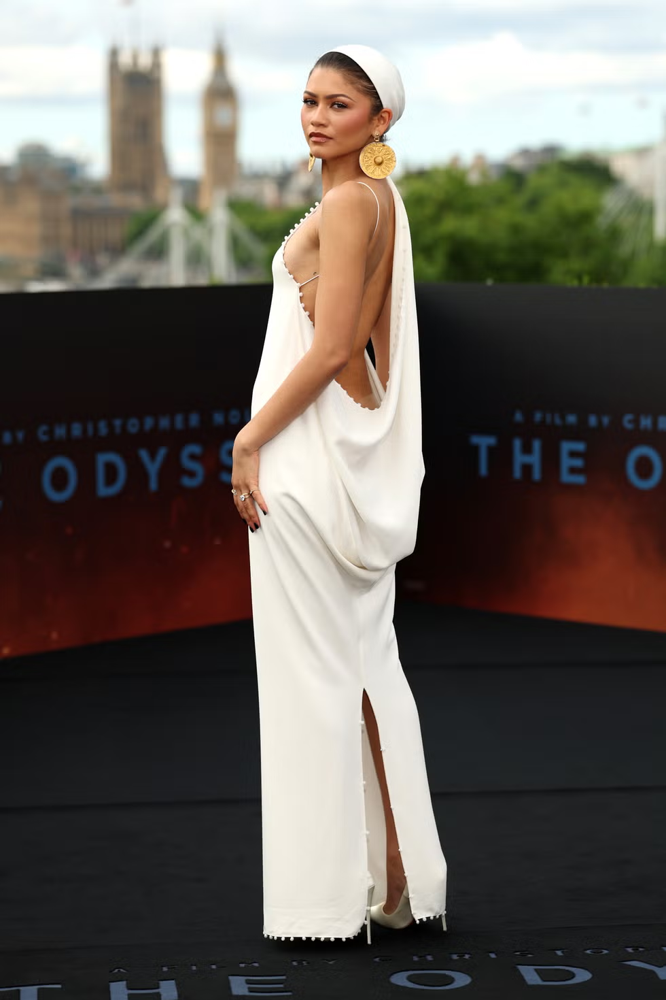
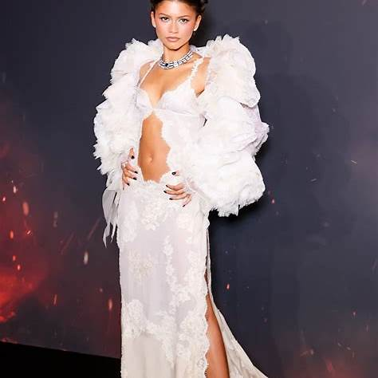
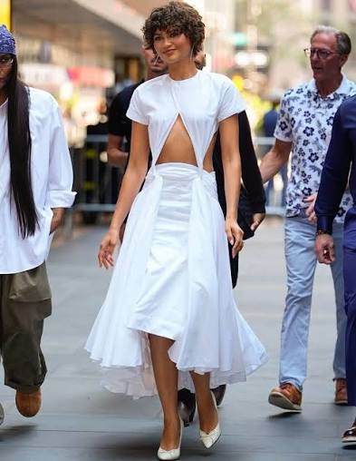
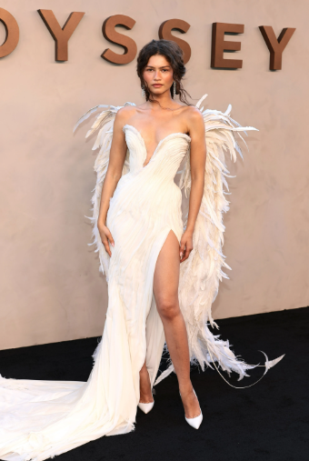

Zendaya has never treated the red carpet as simply a place to wear a beautiful dress. With each new project, she and longtime stylist Law Roach create a complete fashion era that reflects the world of the film. For The Odyssey, her wardrobe has embraced flowing white fabrics, sculptural silhouettes, metallic accents and Grecian influences inspired by her role as Athena. Rather than recreating a costume, the looks capture the power, wisdom and mythology associated with the character.
The tour began at the London photocall, where Zendaya wore a custom ivory Jacquemus gown with a low-draped back, an attached headscarf and oversized gold earrings. Minimal yet regal, the look introduced the visual language of the press tour.

At the London premiere, she shifted into something more dramatic: a Schiaparelli couture gown with a porcelain-like bodice, a shimmering beaded skirt and built-in lighting that transformed her into a glowing modern goddess.
In Paris, she wore a dramatic 1997 Givenchy design by Alexander McQueen, pairing its structured shoulders and sweeping sleeves with a pointed gold Philip Treacy headpiece.
She later changed into a custom Louis Vuitton lace gown featuring a voluminous ruffled bolero, a central cutout and a tanzanite necklace. Where the Givenchy look felt powerful and commanding, the Louis Vuitton gown offered a softer and more romantic interpretation of Athena.

The New York appearances pushed the theme even further. Zendaya revived an archival Alberta Ferretti minidress with gold fringe and knee-high gladiator sandals, transforming a nostalgic trend into something perfectly suited to the mythological world of the film.

The tour's most theatrical moment came at the New York premiere, where she wore a custom white Matières Fécales gown with a feathered train and enormous sculptural wings. Paired with a long fishtail braid and restrained makeup, the look felt like the final transformation in a fashion narrative that had gradually evolved from subtle Grecian references into full mythological spectacle.

This approach is often called method dressing, but Zendaya and Roach take it beyond simply matching an outfit to a movie's theme. During the Challengers press tour, tennis-inspired pieces brought the film's athletic world onto the carpet, while the futuristic silhouettes and metallic textures of Dune reflected its otherworldly setting. What makes Zendaya's style so effective is her ability to fully commit to an idea without disappearing beneath the clothes. Each appearance feels intentional, building toward a larger story rather than existing as an isolated fashion moment. Her outfits introduce a character, establish a mood and create anticipation before audiences ever enter the theater. Zendaya does not simply arrive at a premiere wearing a dress — she gives the audience another scene.
Until next week — stay chévere
All press tour looks